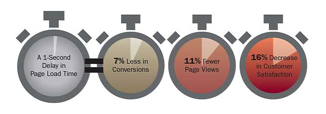

Pragmatic Django Performance: The 20% that matters
- Performance matters
- Mistakes to avoid
- Smallest changes, largest impact
| z, ? | toggle help (this) |
| space, → | next slide |
| shift-space, ← | previous slide |
| d | toggle debug mode |
| ## <ret> | go to slide # |
| c, t | table of contents (vi) |
| f | toggle footer |
| r | reload slides |
| n | toggle notes |
| p | run preshow |


<50% of time<25%uwsgi/mod_wsgi
# my_template.html
{% load compress %}
{% compress css %}
<link rel="stylesheet"
href="/static/css/one.css" type="text/css">
<link rel="stylesheet"
href="/static/css/two.css" type="text/css">
{% endcompress %}

# settings.py
MIDDLEWARE_CLASSES = (
'johnny.middleware.LocalStoreClearMiddleware',
'johnny.middleware.QueryCacheMiddleware',
# ...
)
# /etc/mysql/conf.d/slow_query.cnf
slow_query_log = 1
long_query_time = .1
log_queries_not_using_indexes = 1
# Time: 130823 13:45:48
# User@Host: live0[live0] @ URL[IP]
# Query_time: 10.454075 Lock_time: 0.000085
Rows_sent: 20 Rows_examined: 149654
use policystat;
SET timestamp=1377265548;
# Query_time: 10.454075 Lock_time: 0.000085
Rows_sent: 20 Rows_examined: 149654
SET timestamp=1377265548;
SELECT `auth_user`.`id`, ...snip...
FROM `auth_user` LEFT OUTER JOIN `pstat_profile`
ON (`auth_user`.`id` = `pstat_profile`.`user_id`)
INNER JOIN `pstat_tenant`
ON (`pstat_profile`.`tenant_id` = `pstat_tenant`.`id`)
WHERE (`pstat_profile`.`is_guest` = 0
AND `pstat_profile`.`tenant_id` IN (
301, ...snip... 356)
AND `auth_user`.`is_superuser` = 0
AND `auth_user`.`is_active` = 1
)
ORDER BY `auth_user`.`last_name` ASC,
`auth_user`.`first_name` ASC,
`auth_user`.`username` ASC
LIMIT 20;
ORDER BYorder_bytenant_id, is_guestis_superuser, is_activelast_name, first_name, usernameTEMPLATE_LOADERS = (
(
'django.template.loaders.cached.Loader',
(
'django.template.loaders.filesystem.Loader',
'django.template.loaders.app_directories.Loader',
)
),
)
select_related() is usually your friend# views.py
context = {
'my_things': MyThing.objects.filter(foo=bar)
}
# my_template.html
<table>
{% for my_thing in my_things %}
<tr>
<td>{{ my_thing.name }}</td>
<td>{{ my_thing.other_thing.name }}</td>
<tr>
{% endfor %}
</table>
# views.py
context = {
'my_things': MyThing.objects.filter(
foo=bar
).select_related('other_thing__name')
}
# views.py
def test_query_growth(self):
expected_queries = FuzzyInteger(10, 13)
# Make 5 MyThing objects
with self.assertNumQueries(expected_queries):
# Load the view
# Make 5 more MyThing objects
with self.assertNumQueries(expected_queries):
# Load the view again